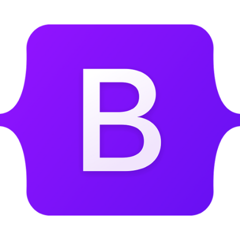
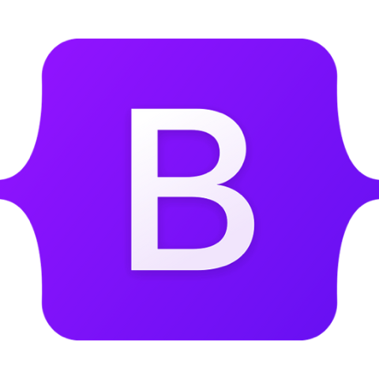
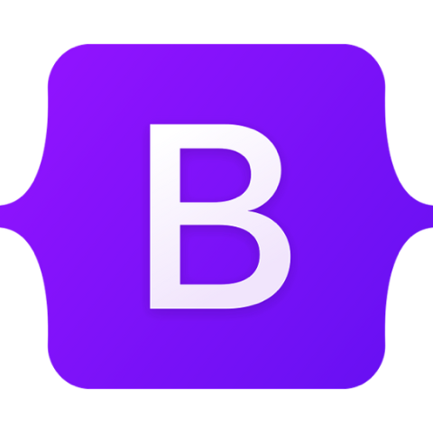

Greetings! I'm a 22-year-old residing in Wanna, Germany, and presently immersing myself in the captivating realm of Media Informatics at TH Lübeck. My foremost passion revolves around web development and web design. My proficiency spans HTML and CSS, and I'm progressively acquainting myself with the nuances of JavaScript and Java. I'm really excited about diving into a wider range of tech possibilities.
Allgemeine Hochschulreife
BBS Cadenberge, Cadenberge, Germany
Graduated: 2020
Ausbildung Sozialpädagogische Assistenz
BBS Cuxhaven, Cuxhaven, Germany
Graduated: 2021
Fernstudium Geprüfter Fitnesscoach + medical Fitness
ILS Hamburg, Hamburg, Germany
Graduated: 2021
Bachelor of Science in Media Informatics
Technische Hochschule Lübeck, Lübeck, Germany
Expected Graduation: 2025
Video games, Soccer and Nature
Teamplayer
organized
critical thinker
